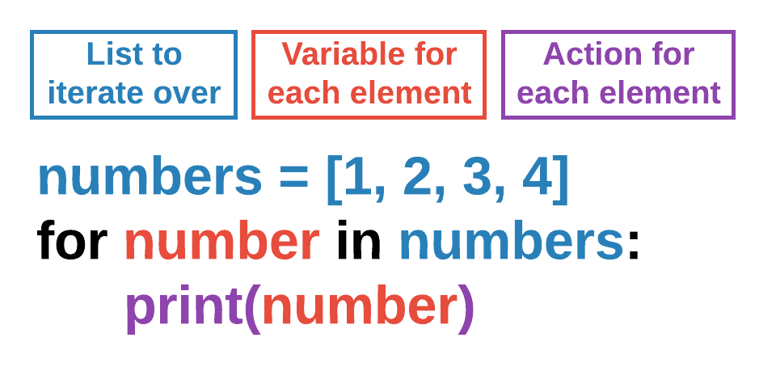

Lists & Loops Cheat Sheet
CS4040 · Unit 4
Every code block has a copy button (top right). Download the printable PDF.
Assets
| Folder | Holds | File types |
|---|---|---|
images |
pictures for Actors | .png |
sounds |
sound effects | .wav or .ogg |
music |
background music | .ogg or .mp3 |
Asset names follow the same rules as Python variables: all lowercase, no spaces, only letters, numbers and underscores, and they must begin with a letter. Refer to an asset by its name without the extension: "alien", not "alien.png".
Lists
- Lists: data type used to organize a collection of items.
- Items in lists can be ints, strings, Actors, etc.
- It is an ordered sequence of individual elements.
- Accessible by index.
Note: indexes start at 0! You can also use negative indexes, which count from the end.
nums = [2, 4, 6, 8, 10, 12]
nums[0] # accesses 1st element - index 0
nums[2] # accesses 3rd element - index 2
nums[-1] # accesses last element
nums[1] = 8 # updates 2nd element
print(nums) # prints the new listList operations
- Definition: creating a list using square brackets
[]. - Access: getting a value by index.
- Update: replacing a value at an index.
len(name_of_list): returns how many items are in the list..append(item): adds item to the end of the list..remove(item): removes item by value..pop(index): removes and returns the item at index. Removes the last item if no index is provided..clear(): removes all items.
pets = ["cat", "dog", "fish"]
pets[1] # dog
pets[0] = "pig" # ["pig", "dog", "fish"]
len(pets) # 3
pets.remove("fish") # ["pig", "dog"]
pets.append("rat") # ["pig", "dog", "rat"]
item = pets.pop(0) # ["dog", "rat"]
item = pets.pop() # ["dog"]
pets.clear() # []Looping over a list
- A
forloop goes through each item in a list one at a time. - The loop starts at the first item and continues to the end.
- The loop iteration variable stores the current item.
- The loop runs once for each item in the list.
- List variable names are typically plural (
enemies) and our iteration variable names are typically singular (enemy). - The iteration variable grabs a single element from the list at a time, in order.

Drawing a list of Actors
We use a for loop to iterate/loop over a list of Actors. This shows how to draw each Actor in a list.
def draw():
screen.clear()
for enemy in enemies: # one Actor at a time, in order
enemy.draw()Moving a list of Actors
Another loop/list example: iterate over a list of Actors to change each individual Actor’s position by its own velocity variables.
def update():
for enemy in enemies: # each Actor moves by its own velocity
enemy.x += enemy.velocity_x
enemy.y += enemy.velocity_yCollisions with a list
player.collidelist(enemies) returns the index of the enemy in the list that collided with player, or -1 if there was no collision. Use != -1 just to know whether a collision happened (a lose condition). Keep the index to know which item was hit, then pop() that item from the list.
# check for enemy collision with list
if player.collidelist(enemies) != -1: # -1 means no collision
game.lose() # game over
# check for collectible collision with list
collision_index = player.collidelist(gems) # index of the gem hit
if collision_index != -1:
# collected gem, remove from list
gems.pop(collision_index)
game.score += 1Putting it all together
- Define lists as global variables at the top so they can be accessed across the program.
- In this program we periodically add enemies to the screen, so
start()empties the list (at start and restart) and starts a clock interval that callsspawn_enemy()every 5 seconds. spawn_enemy()creates a new enemy Actor, sets its ownposand velocity, and appends it to the list. These apply to that one single Actor, and the variableenemydoes not exist outside this function: you have to reach that Actor by iterating throughenemies!draw()loops over the list to draw each Actor;update()loops over it to move each Actor, then usescollidelist()for a lose condition and to collect gems.
# globals
enemies = []
# runs once at beginning
def start():
enemies.clear()
clock.schedule_interval(spawn_enemy, 5)
# create spawn callback function
def spawn_enemy():
enemy = Actor("alien")
enemy.pos = (100, 100)
enemy.velocity_x = random.randint(1, 5)
enemy.velocity_y = random.randint(1, 5)
enemies.append(enemy)
def draw():
screen.clear()
for enemy in enemies: # one Actor at a time, in order
enemy.draw()
for gem in gems:
gem.draw()
player.draw()
def update():
for enemy in enemies: # each Actor moves by its own velocity
enemy.x += enemy.velocity_x
enemy.y += enemy.velocity_y
# check for enemy collision with list
if player.collidelist(enemies) != -1: # -1 means no collision
game.lose() # game over
# check for collectible collision with list
collision_index = player.collidelist(gems) # index of the gem hit
if collision_index != -1:
# collected gem, remove from list
gems.pop(collision_index)
game.score += 1